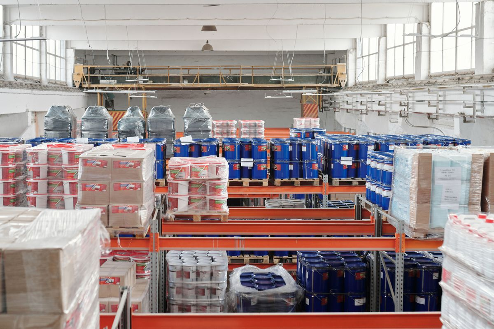
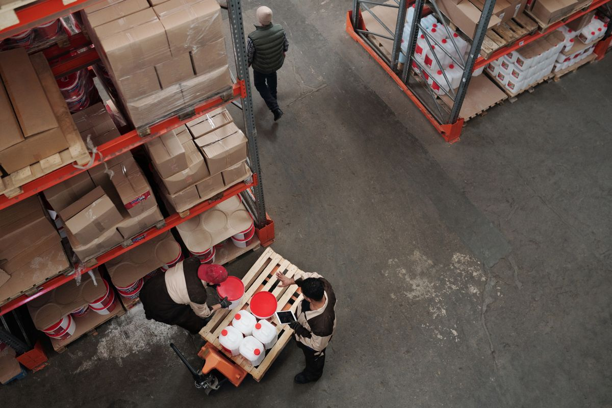

KEMONY fortalece su estrategia de expansión para ampliar su presencia en el mercado nacional
La compañía avanza en un proceso apoyado en la optimización de sus operaciones, el fortalecimiento de su red de distribución y la consolidación de nuevos canales comerciales.
· Lectura 6 min

Santo Domingo.— La empresa KEMONY avanza en un proceso de expansión nacional con el objetivo de fortalecer su presencia en el mercado de soluciones alimenticias, mediante una estrategia enfocada en la optimización de sus operaciones, el fortalecimiento de su red de distribución y la consolidación de nuevos canales comerciales.
Como parte de este proceso, Alejandro Alfredo Londoño Guerrero participa en las iniciativas orientadas a robustecer la estructura organizacional de la compañía, con la finalidad de respaldar un crecimiento sostenible en diferentes regiones del país.
Nuevos hábitos de consumo
La empresa informó que la estrategia responde a los cambios registrados en los hábitos de consumo, donde los alimentos de preparación práctica y las masas listas han ganado terreno entre consumidores que buscan ahorrar tiempo sin sacrificar calidad y sabor.
En ese contexto, KEMONY desarrolla acciones para ampliar su cobertura comercial y consolidar una oferta que atienda las nuevas necesidades del mercado, tanto en los hogares como en supermercados, comercios especializados y establecimientos gastronómicos.
Más allá de los puntos de venta
La expansión, según la compañía, no se limita a incrementar la cantidad de puntos de venta, sino que contempla el fortalecimiento de procesos internos, la mejora de la logística, la coordinación entre las distintas áreas operativas y la implementación de mecanismos que permitan sostener el crecimiento de forma organizada.
Ejes del plan de crecimiento
- Optimización de las operaciones
- Fortalecimiento de la red de distribución
- Consolidación de nuevos canales comerciales
- Mejora de la logística y de los procesos internos
- Coordinación entre las áreas operativas
- Cumplimiento de los tiempos de entrega
Relación con distribuidores y aliados
Asimismo, la empresa trabaja en el fortalecimiento de las relaciones con distribuidores, aliados comerciales y emprendedores del sector gastronómico, con el propósito de ampliar la disponibilidad de sus productos y reforzar su presencia en diferentes segmentos del mercado.

Posicionamiento en la industria
Con estas acciones, la empresa busca consolidar su posicionamiento dentro de la industria alimentaria, apoyándose en una estrategia de crecimiento basada en la planificación, la eficiencia operativa y el fortalecimiento de su capacidad de distribución.